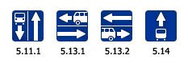

Вне перекрестков, где трамвайные пути пересекают проезжую часть, трамвай имеет преимущество перед безрельсовыми транспортными средствами, кроме случаев выезда из депо.
На дорогах с полосой для маршрутных транспортных средств, обозначенных знаками 5.11.1, 5.13.1, 5.13.2, 5.14 "Дорога с полосой для маршрутных транспортных средств", запрещаются движение и остановка других транспортных средств (за исключением транспортных средств, используемых в качестве легкового такси, а также велосипедистов - в случае, если полоса для маршрутных транспортных средств располагается справа) на этой полосе.

Если эта полоса отделена от остальной проезжей части прерывистой линией разметки, то при поворотах транспортные средства должны перестраиваться на нее. Разрешается также в таких местах заезжать на эту полосу при въезде на дорогу и для посадки и высадки пассажиров у правого края проезжей части при условии, что это не создает помех маршрутным транспортным средствам.
В населенных пунктах водители должны уступать дорогу троллейбусам и автобусам, начинающим движение от обозначенного места остановки. Водители троллейбусов и автобусов могут начинать движение только после того, как убедятся, что им уступают дорогу.